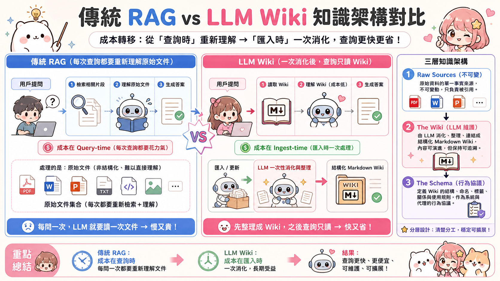
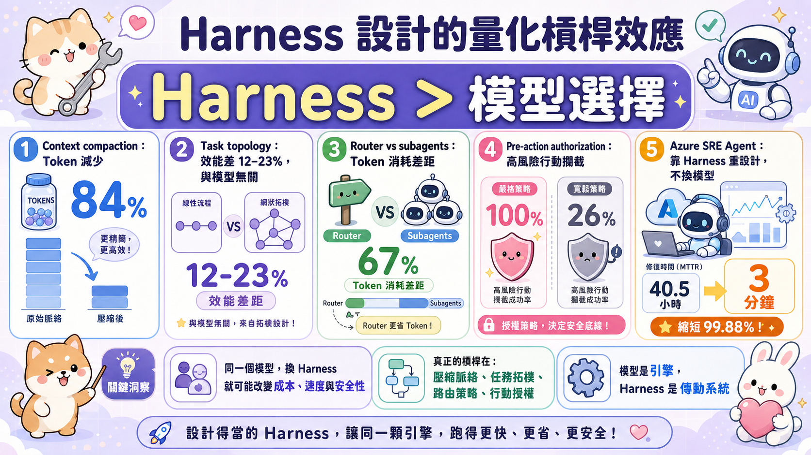
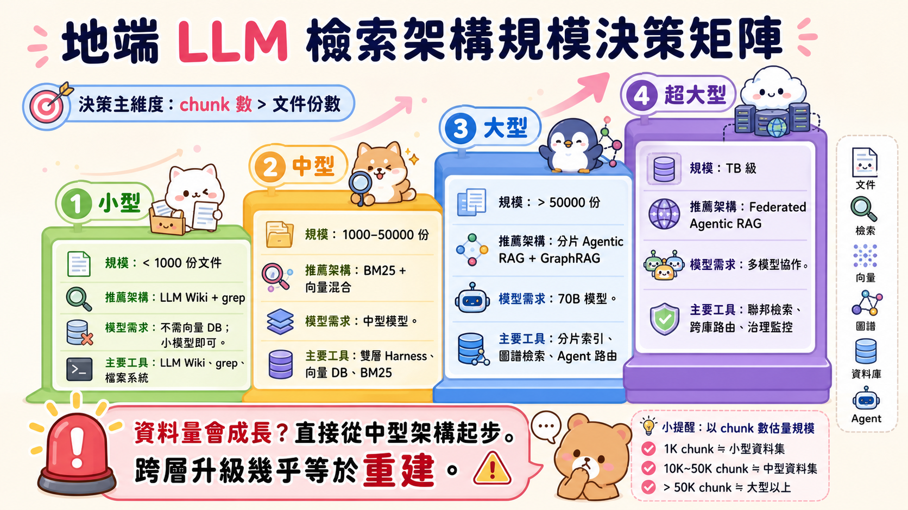

前言：當系統開始懂得說「我還不知道」
AI 系統最危險的缺陷，不是找不到答案，而是找到了一個自信滿滿的錯答案。
問企業知識庫：「Project X 用的伺服器規格是什麼？」系統找到一份 Project X 的文件，裡面只寫著「使用 Server ID: SRV-204」，然後它把這句話包裝成完整答案回傳給你。
技術上，它「找到了」。業務上，它給了你一張沒有地址的地圖。
這個場景正是 2026 年 AI 檢索機制演化的驅動力。從 Google Research 的 Agentic RAG、Karpathy 的 LLM Wiki、到 a16z 對持續學習的呼籲，各方正在不同層次解決同一個問題：讓系統知道自己不知道什麼，並且知道如何去補齊它。
本文整合七個核心來源，從微觀的檢索工具選擇，到巨觀的學習典範轉移，為台灣 AI 從業者提供一份實戰導向的地端 LLM 檢索機制全景分析。
標準 RAG 的結構性死局

標準 RAG（Retrieval-Augmented Generation）的邏輯看似直觀：
使用者問題 → 向量搜尋 → 取回相關文件片段 → LLM 合成答案
這個流程在「問題答案剛好在同一份文件」時表現優異。但企業知識庫的現實從來不是這樣長的。
三個不可迴避的結構性問題
問題一：多跳推理（Multi-hop Reasoning）
現實中的業務問題往往需要跨越多個文件、多個資料庫才能拼湊出完整答案。「Project X 的伺服器規格」可能需要：文件 A（找到 server ID）→ 文件 B（ID 對應到型號）→ 規格資料庫（型號對應規格）。標準 RAG 的單步搜尋根本無法完成這個推理鏈。
問題二：假完整性（False Completeness）
當搜尋結果不足，系統不會說「我不確定」——它會用手邊殘缺的資訊，生成一個語氣流暢但實際有缺口的答案。這種「自信的不完整」比明顯的錯誤更難被發現。
問題三：知識孤島（Knowledge Silos）
企業資料分散在 HR 系統、財務記錄、技術文檔、客服歷史、CRM 等不同系統中。單一向量資料庫無法涵蓋全貌，但同時查詢多個資料庫又面臨「選哪個庫」的路由問題。
Agentic RAG：五代理人的認知分層

Google Research 在 2026 年 6 月發表的研究，提出了超越標準 RAG 的多代理人架構。核心洞見是：把「理解問題、搜尋資料、合成答案」這三件事拆解成五個認知層次，分別由專門的代理人負責。
五大代理人的分工邏輯
| 代理人 | 認知層次 | 核心職責 |
|---|---|---|
| Orchestrator | 意圖理解 | 評估請求性質，決定委派策略 |
| Planner Agent | 資訊地圖 | 規劃「需要哪些資料、從哪裡取」 |
| Query Rewriter | 搜尋語言翻譯 | 將自然語言轉換成多個精準查詢 |
| Search Fanout Agent | 並行執行 | 將精煉查詢分發至多個資料來源 |
| Synthesis Agent | 語意整合 | 跨來源合成最終答案 |
這五層分離有一個關鍵好處：每一層都可以獨立優化，失敗也可以獨立偵測，不再是難以追蹤的黑盒。
核心創新：Sufficient Context Agent
讓整個框架質變的，是來源中明確命名的 Sufficient Context Agent（充分上下文代理）——它與上述五個代理人並列，專責品質驗證。它在把資料交給最終合成前，先問一個問題：「這些資料夠回答原始問題嗎？」
要讓機器真正理解「夠」，需要三層判斷：
- 片段層：取回的文字本身是否包含有效資訊，還是只是關鍵字命中但語意無關？
- 草稿層：初步生成的答案是否有明確的邏輯缺口，還是看起來完整但語焉不詳？
- 缺口層：如果不夠，缺的是什麼？要用什麼查詢去補？
這個設計賦予 AI 系統真正的 epistemic awareness（知識邊界意識）——知道自己不知道什麼，並且主動採取行動補齊。
效能驗證
（4 個資料庫中選出正確來源）
（相比標準 RAG 最多）
來自 2,676 份 PDF
⚠️ 延遲數字校正：來源引用的「延遲增加不超過 3%」為 Google 雲端 TPU 基礎設施量測結果，比較基準是「單一語料庫 vs 跨語料庫路由」，並非標準 RAG vs Agentic RAG 的總延遲差。地端環境受限於 Ollama 序列化、消費級硬體 decode 速率（7–31 tokens/s）與多輪迴圈放大效應，Agentic RAG 相對標準單次 RAG 的延遲增幅，現實中可能是 3–10 倍，不可直接移植此 3% 數字。
重要性：Agentic RAG 框架讓每一步都有可追溯的中間狀態，答案從「你要信任它」變成「你可以驗證它」。在金融、法務、醫療等高風險行業，「可驗證性」本身就是產品核心競爭力。
LLM Wiki：Karpathy 的知識預消化革命
Andrej Karpathy 在 GitHub Gist 提出的 LLM Wiki 模式，解決了一個前面三個問題都沒正面處理的根本缺陷：原始文件本身就是噪音。
核心翻轉
傳統 RAG： 原始文件 ──[每次查詢時取回]──→ LLM 重新理解 → 答案 成本在 query-time，且每次都重新從零開始 LLM Wiki： 原始文件 ──[一次性 ingest]──→ 結構化 Wiki ──[查詢時讀 Wiki]──→ LLM → 答案 成本在 ingest-time，查詢時只需讀已消化的知識

三層架構
Layer 1 — Raw Sources（不可變的原始來源）
你策展的原始文件：論文、會議記錄、產品文件、技術規格。人類負責策展，LLM 不修改原始來源。
Layer 2 — The Wiki（LLM 維護的知識庫）
由互相連結的 Markdown 頁面構成的知識圖譜。每次有新原始文件進來，LLM 不只是「歸檔」，而是將新知識融入現有的 10–15 個相關頁面。知識在這裡累積、整合、交叉引用。
Layer 3 — The Schema（行為協議）
一份類似 CLAUDE.md 的配置文件，定義 LLM 如何維護 wiki——什麼格式、什麼交叉引用規則、什麼品質標準。
三個核心操作
| 操作 | 觸發時機 | LLM 做的事 |
|---|---|---|
| Ingest | 新文件加入 | 理解內容，融入相關 Wiki 頁面，建立交叉引用 |
| Query | 使用者提問 | 讀取相關 Wiki 頁面合成答案；好答案本身也成為新頁面 |
| Lint | 定期排程 | 偵測矛盾、過時內容、孤立頁面、缺失交叉引用 |
與 a16z 壓縮論的呼應
a16z 指出，LLM 訓練的本質是把海量資料壓縮成模型參數。LLM Wiki 把同樣的壓縮邏輯搬到 inference time——wiki 是存在 Markdown 檔案裡的壓縮知識快取，不是模型權重，但服務相同的目的。這讓 LLM Wiki 成為整個學習光譜上的重要中繼站：不需要修改模型權重，卻讓系統累積並整合知識。
LLM Wiki 的真實維護成本
Karpathy 的 gist 宣稱「維護成本幾乎為零」，實際上指的是人力成本降低。但以下成本不能忽視：
| 成本類型 | 說明 |
|---|---|
| 算力成本 | 每次 Ingest 需要 LLM 讀寫 10–15 個現有頁面，複雜度隨 wiki 成長而上升 |
| 回歸風險 | 新文件觸發 LLM 改寫舊頁面，可能悄悄破壞已正確的內容 |
| Lint 全庫掃描 | 矛盾/過時偵測本質是全庫遍歷，成本非固定值 |
| 漂移與幻覺 | LLM 自維護的 wiki 缺乏 ground truth，需要定期人工抽查 + git 版控追蹤變更 |
務實建議：把維護成本標定為「低但非零」，並建立 git 版控 + 定期 diff review 的紀律，讓 wiki 的演化可追溯。
現實世界實作參照
- 儲存層採 SQLite FTS5（關鍵字全文搜尋），而非向量 DB——與本文 §5「結構化 Markdown 最適合 BM25/grep」的論點一致
- 介面為 MCP server，支援 Claude、Cursor、Cline 等多種客戶端，不鎖定單一 AI
- Filesystem 是 source of truth，SQLite 是可重建的衍生 index——強化了 git 版控可追溯性
已知限制：一個 workspace 對應一個 MCP server（多專案需多配置）；本地模式無語意搜尋（需混合架構補足）。
為地端部署量身設計
LLM Wiki 的輸出是結構化 Markdown——這正是最適合 grep 和 BM25 搜尋的格式。這不是巧合，而是讓「知識預消化」和「輕量地端檢索」天然互補的設計。
Grep、向量、還是混合？地端檢索工具的真相
PwC 研究者的《Is Grep All You Need?》引發的論戰，在 2026 年 6 月由愛好 AI 工程 Blog 做了清醒的梳理。
Grep 的真正甜蜜點
研究發現，在特定場景下 grep 的準確率可以高達 86.2%，遠超向量檢索的 62.9%。但這個優勢有明確的適用條件：
| ✅ grep 適合 | ❌ grep 不擅長 |
|---|---|
| 對話記憶搜尋（字面關鍵字） | PDF、圖片等非文字格式 |
| 程式碼識別字、變數名、函式名 | 同義詞替換、術語不一致 |
| 產品編號、錯誤碼、精確查詢 | 概念性、推理性的查詢 |
| 結構清晰的純文字（如 LLM Wiki Markdown） | 跨語言語意搜尋 |
雙峰查詢分布：設計 Harness 的關鍵輸入
來源描述實際企業查詢呈現雙峰特性：約一半是對話式問句（語意查詢），另一半是精確查詢（如產品碼、錯誤碼），其中精確查詢往往佔超過 30% 的流量。（來源未提供精確百分比切分，以下為示意。）這個雙峰特性指向 Harness 的核心設計需求——應先做 query 分類器，自動路由到最適合的檢索路徑。
混合檢索：現在的工程標準答案
| 層次 | 工具 | 適用 |
|---|---|---|
| 精確層 | BM25 / grep | 關鍵字、產品碼、程式碼 |
| 語意層 | 向量搜尋（local embedding） | 概念查詢、語意相似 |
| 融合層 | RRF（互補排名融合） | 整合兩種結果 |
| 重排層 | Cross-encoder reranker | 最終相關性排序 |
| 關係層 | GraphRAG（視需要） | 跨實體關係推理 |
2025–2026 趨勢數據：導入混合檢索的意願從 2025 年初 10.3% 上升到年底 33.3%。「超長上下文淘汰檢索」的說法從 15.5% 跌至 3.5%——市場正在回歸務實。
語意版 Grep：新興工具
- LlamaIndex semtools：用 LlamaParse 處理 PDF + model2vec 本地語意搜尋
- ColGrep（LightOn）：整合 regex + 語意排序 + RRF，勝純 grep 約 70%
- Jina jina-grep：支援自然語言搜尋與管線語意重排
Harness 設計：決定性能的真正變數
「上下文工程大概有八成，其實就是代理式搜尋。」
— Leonie Monigatti
這句話揭示了一個被大多數開發者忽略的真相：Harness（代理框架）的設計，對系統性能的影響遠超過選擇哪種檢索演算法。
量化證據：Harness 的槓桿效應
以下數據來自 ai-boost/awesome-harness-engineering 彙整的已發布 benchmark 與案例研究。
| 工程決策 | 量化效益 | 備註 |
|---|---|---|
| Server-side context compaction | token 消耗下降 84% | web-search evals |
| Domain-specific context pruning | 額外節省 31% token | coding agent 情境 |
| Task topology 選擇（並行/序列/階層） | 性能差異 12–23% | 與模型選擇無關 |
| Router vs subagents 架構 | token 消耗差距 67% | cross-domain 情境 |
| Pre-action authorization（事前授權） | 攔截高風險行動 100% vs 寬鬆策略 26% | 安全測試 |
⚠️ 各項數字的原始量測條件各異，僅作為量級參考，不宜跨情境直接套用。
Azure SRE Agent 案例：Harness 重新設計後，事件平均修復時間從 40.5 小時降至 3 分鐘。此數字為廠商公布的 best-case 對比，現實部署效益因情境差異顯著；但其方向明確：這是 Harness 重設計的成果，沒有更換底層模型。

什麼是 Harness？
Harness 是 Agent 的執行框架，定義了：
- 代理人如何協作（任務分派、結果傳遞）
- 搜尋何時停止（終止條件）
- 失敗如何處理（重試、降級）
- 結果如何整合（融合、排序、驗證）
雙層迴圈設計
優秀的 Harness 設計應包含兩層迴圈：
外層迴圈（品質驗證）
└── 內層迴圈（查詢迭代）
├── 發出查詢
├── 取回結果
├── 評估相關性
└── 若不足 → 精煉查詢 → 重試
└── 若結果達標 → 合成最終答案
└── 若未達標 → 調整策略 → 重新進入內層迴圈
⚠️ 工程落地的隱藏複雜度：迴圈防呆（loop guard）的開發量往往超過迴圈主邏輯本身。必須明確實作：
- max-iteration 上限：防止無限迴圈（建議 3–5 次）
- cost budget：限制單次查詢的 LLM 呼叫總量
- 查詢去重：避免相同查詢被反覆送出
- 震盪偵測：偵測 A→B→A 的循環模式並強制跳出
- 退化偵測：精煉後的查詢若比原始更差，應回退而非繼續細化
Sufficient Context 的終止條件設計
Agentic RAG 框架的迴圈終止條件是語意完整度，而不是固定的搜尋次數上限。建議使用獨立的微調小模型（如 Llama 3.1 8B instruct）專門負責這個判斷步驟——降低延遲，也降低大模型在 meta-reasoning 上的不穩定性。
# Sufficient Context Agent 的地端實作
# 輸入：原始問題 + 已取回片段 + 初步草稿
# 輸出：{ "sufficient": bool, "missing": ["缺少什麼"], "refine_query": "精煉查詢" }⚠️ Sufficient Context Agent 的語意可靠性：constrained decoding 只保證輸出語法合法（有效 JSON），不保證判斷語意正確——小模型可能吐出語法完美但判斷錯誤的 "sufficient": true。建議為 judge 模型建立獨立的評估集（golden set），量測 false-sufficient rate，並設定可接受的上限門檻後再上線。
地端最小可行 Harness 技術棧
模型服務層：【開發驗證】Ollama（易用，但並發弱）
【上量生產】vLLM / llama.cpp server / TGI（真正的並發支援）
模型選擇：Llama 3.3 70B（主推理）+ Llama 3.1 8B（Sufficient Context judge）
向量資料庫：Qdrant（self-host）或 ChromaDB（本地輕量）
Harness 框架：LlamaIndex（有內建 Agentic RAG 模板）
LangGraph（更靈活的狀態機，適合複雜流程）
知識層：Karpathy LLM Wiki（Markdown + ripgrep）
⚠️ Ollama 多模型共存警告：Agentic 流程同時需要主模型 + judge 模型時，Ollama 預設會在模型間 load/unload，每次切換可能增加數秒延遲。正式部署前需壓測並發情境，或改用支援多模型常駐的 serving 引擎。
Gemma 4 12B：地端 Agent 的新拼圖

2026 年 6 月 3 日，Google 發布 Gemma 4 12B，這是第一款明確以地端 Agentic 工作流為設計核心的開源模型。
核心規格
| 特性 | 規格 |
|---|---|
| 上下文視窗 | 128K tokens |
| 語言支援 | 140+ 種語言 |
| E2B 精簡版記憶體 | < 1.5GB |
| 精簡版推薦硬體 | 16GB RAM 筆電（來源以 Gemma 4 家族為整體宣傳，非 12B 單獨規格） |
| 權重量化 | 2-bit / 4-bit 支援 |
| Raspberry Pi 5（CPU） | 133 prefill / 7.6 decode tokens/s |
| 高通 Dragonwing IQ8（NPU） | 3,700 prefill / 31 decode tokens/s |
三個對 Agentic RAG 有意義的特性
特性一：結構化輸出（Constrained Decoding）
受約束的解碼確保工具調用結果格式可預測。Orchestrator 和 Sufficient Context Agent 的輸出必須是可解析的 JSON，Gemma 4 的這個特性讓 Harness 的整合成本大幅降低。
特性二：Gemma Skills Repository（官方技能庫）
Google 提供可重用技能的官方庫，專門為 Agentic 工作流設計，與 LLM Wiki 的 Ingest / Query / Lint 操作天然對應。
特性三：多步驟規劃能力
Gemma 4 明確支援 multi-step planning 和 autonomous action，Planner Agent 的角色可以由單一 Gemma 4 模型承擔。
⚠️ 12B 的能力邊界：Gemma 4 12B 的 Agentic 設計在簡單 2–3 跳查詢上有意義，但在以下情境容易失敗：
- 超過 4–5 步的長計畫：容易丟失狀態、重複已完成步驟
- 空結果或矛盾資料的錯誤恢復：傾向「假裝沒事繼續」而非重新規劃
- 跨工具參數傳遞：多資料源混查時準確性顯著下降
複雜企業查詢建議以 70B 模型擔任 Orchestrator / Planner，12B 作為輔助角色（如輕量 judge 或單一工具呼叫）。
與 Sufficient Context Agent 的搭配
Gemma 4 的結構化輸出特性讓 Sufficient Context Agent 的回應解析更穩定，建議設計如下 JSON schema：
{
"sufficient": false,
"confidence": 0.3,
"missing_aspects": ["病患過敏資訊", "藥物交互作用"],
"refined_queries": [
"patient allergy records post-surgery 2024",
"drug interaction warfarin aspirin"
]
}資料量對架構規劃的決定性影響
⚠️ 維度說明：架構選型的主要維度應為 chunk 數與總 token 量，而非文件份數。1,000 份各 200 頁的 PDF 與 1,000 份單頁備忘錄是完全不同的工程量級。文件份數僅作為粗略參考。
⚠️ 升級路徑警告：相鄰層可漸進升級；跨層（小型→大型）幾乎等於重建，資料層、檢索層、Harness、模型層四個維度全換。若預期資料量會增長，建議直接從中型架構起步，避免日後重寫成本加倍。

規模分層決策矩陣
| 規模 | 推薦架構 | Harness | 模型 | 注意 |
|---|---|---|---|---|
| 小型 <1K文件 <100K chunks | LLM Wiki + grep | 單層迴圈 | Gemma 4 12B（簡單查詢） | ⚠️ 若預期成長，直接用中型 |
| 中型 1K–50K文件 100K–5M chunks | LLM Wiki + BM25 + 向量 | 雙層迴圈 + query 路由 | 70B 主推理 + 8B judge | 大多數企業場景的甜蜜點 |
| 大型 >50K文件 >5M chunks | 分片 Agentic RAG + 混合檢索 | 跨語料庫選庫 + GraphRAG | 70B 主模型，邊緣用 12B | 需要跨語料庫路由 |
| 超大型 數 TB，多系統 | Federated Agentic RAG | 多節點協調 + 衝突解決 | 混合雲（邊緣小模型 + 雲端大模型） | 無法集中，需分散式協調 |
資料異質性：比資料量更難處理的變數
| 資料特性 | 架構影響 |
|---|---|
| 純文字 + 關鍵字查詢 | BM25 / grep 優先 |
| PDF + 圖表 | 需要文件解析層（Docling、LlamaParse） |
| 多語言混合 | 需要語言偵測 + 分語言 embedding 模型 |
| 時效性強（每日更新） | LLM Wiki Lint 必須自動化排程 |
| 結構化資料（資料庫表格） | 需要 Text-to-SQL 而非向量搜尋 |
| 程式碼庫 | grep / AST 搜尋優於向量 |
資料量與 LLM Wiki 的關係
- 小型：整個 wiki 可完整塞進 128K 上下文，直接問答（但注意：KV cache 記憶體膨脹 + lost-in-the-middle 問題在地端尤為嚴重）
- 中型：wiki 超出上下文，需在 wiki 頁面之間做輕量檢索
- 大型：wiki 本身需要分層（子 wiki + 主索引），Planner Agent 先查索引再決定讀哪個子 wiki
持續學習：檢索的終極邊界
一個能無限取回資訊的系統，不代表它真正學會了任何東西。
— a16z, Why We Need Continual Learning (2026)
a16z 用電影《記憶拼圖》做比喻：Leonard 靠著紙條和刺青記事，但從來沒有真正「學會」任何新東西。現在所有的 RAG 系統，包括最先進的 Agentic RAG，都是 Leonard。

在上下文學習的三個死角
死角一：真正的新發現
費馬最後定理的證明、龐加萊猜想的解法——這類需要真正創造新概念的問題，無法從現有文獻中取回，也無法由更複雜的 RAG 架構解決。
死角二：隱性知識（Tacit Knowledge）
如何從醫學掃描圖辨識良性與惡性腫瘤的細微差異——這些知識維度過高，無法用語言表達，也無法被 wiki 頁面捕捉。
死角三：對抗性適應
安全威脅持續演化，系統需要在接觸新攻擊模式的當下就更新判斷能力，不是等到下次訓練週期。
學習光譜：從取回到更新

| 光譜位置 | 代表技術 | 時間軸 |
|---|---|---|
| Context 端（取回） | 標準 RAG、Agentic RAG、LLM Wiki | 現在可以做 |
| Modules（半壓縮） | LoRA / Adapter、附加知識模塊 | 近期可落地 |
| Weights（全參數更新） | Test-Time Training、持續學習 | 2–3 年後的技術 |
為什麼 Weights 端還沒成熟？

- 災難性遺忘（Catastrophic Forgetting）：學習新知識會覆蓋原有知識，尚無穩健的解決方案
- 時間解耦問題（Temporal Disentanglement）：不變規則和可變事實壓縮在同一批參數中，更新一個會破壞另一個
- 對齊退化（Alignment Degradation）：即使是局部良性的微調，也可能廣泛破壞對齊行為
- 可審計性崩潰（Auditability Breakdown）：持續更新的模型無法版本化、測試或認證
務實的採用建議

第一層（現在就做）：Agentic RAG + LLM Wiki 第二層（近期考慮）：LoRA adapter 讓模型逐漸內化高頻知識 第三層（等技術成熟）：真正的持續學習，待 Catastrophic Forgetting 有解決方案再評估
地端 LLM 檢索的未來路線圖
現在（2026）：架構拼圖已齊
Gemma 4 12B → 地端 Agent 能力（多步規劃 + 結構化輸出） LLM Wiki → 知識預消化（原始文件噪音的解方） 混合檢索 → grep + BM25 + 向量 + RRF（工程標準答案） Agentic RAG 框架 → Sufficient Context 終止邏輯 Harness 設計 → 把上面四件事整合成可運作的系統
現在最重要的能力：把這些拼圖組合起來的 Harness 設計能力。
近期（2026–2027）：知識層的精緻化
- LLM Wiki 模式已出現可用開源實作：lucasastorian/llmwiki（FTS5 + MCP，⭐ 1.1k）為代表；社群延伸版本（v2 方向）正在加入 Knowledge Graph 與 event-driven 自動化
- 語意 grep 工具（ColGrep、jina-grep）將成為標準工具鏈的一部分
- LoRA adapter 作為 wiki 的「快取加速層」開始落地
中期（2027–2028）：Harness 即產品
- Harness 框架將從「工程基礎設施」演化為「可售賣的產品」
- 領域特化的 Agentic RAG 解決方案（法律、醫療、金融）在地端完整可用
- 模型端：12B 等級模型的 Agentic 能力持續提升，70B 模型的門檻降低
長期（2028+）：邊界的真正突破
- Continual Learning 的參數更新問題若有突破，RAG 作為外掛記憶體的角色將被重新定義
- 但 a16z 的警告值得銘記：可審計性和隱私保護的需求，會讓「純外掛記憶體」的 RAG 架構在高風險行業持續有其位置
給台灣 AI 從業者的三個行動建議
附錄：關鍵圖表索引
| 圖表 | 來源 | 連結 |
|---|---|---|
| Agentic RAG 封面 | Google Research | 連結 |
| Agentic RAG 架構對比 | Google Research | 連結 |
| Gemma 4 Banner | Google Developers | 連結 |
| In-Context Learning 的極限 | a16z | 連結 |
| 學習光譜（Context → Weights） | a16z | 連結 |
| Naive 權重更新失敗原因 | a16z | 連結 |
| 持續學習新創生態 | a16z | 連結 |
| LLM Wiki vs 傳統 RAG 對比（自製） | 本文 | images/llm_wiki_comparison.png |
| Harness 量化槓桿效應（自製） | 本文 | images/harness_leverage.png |
| 資料量規模決策矩陣（自製） | 本文 | images/scale_decision_matrix.png |